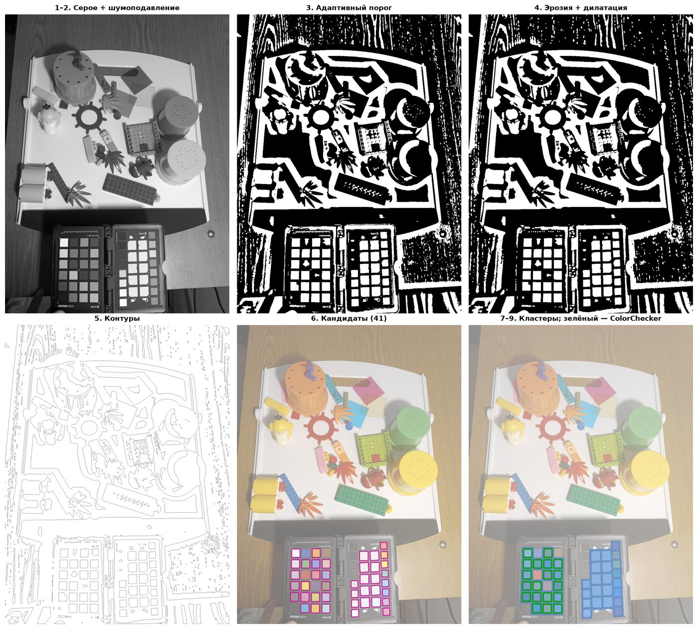
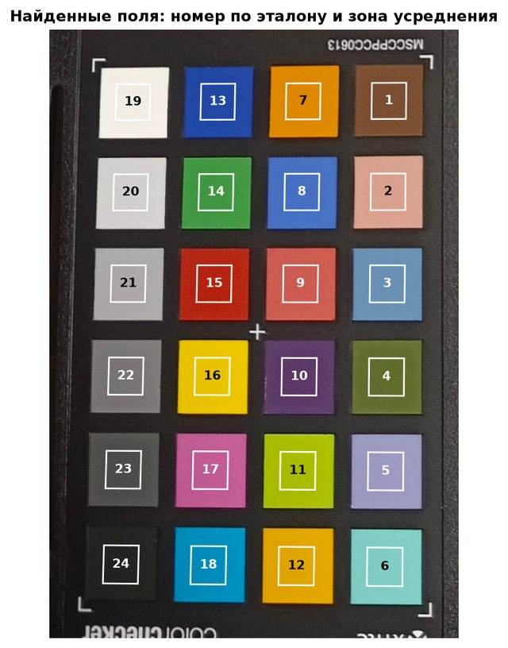
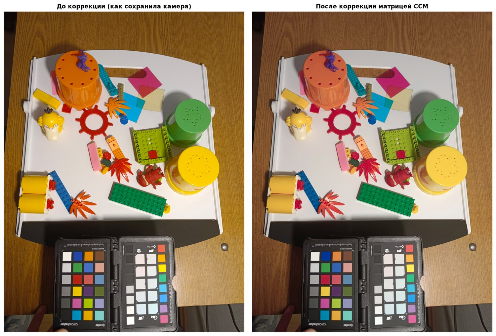
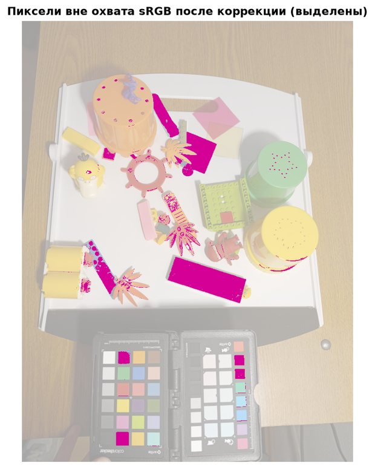
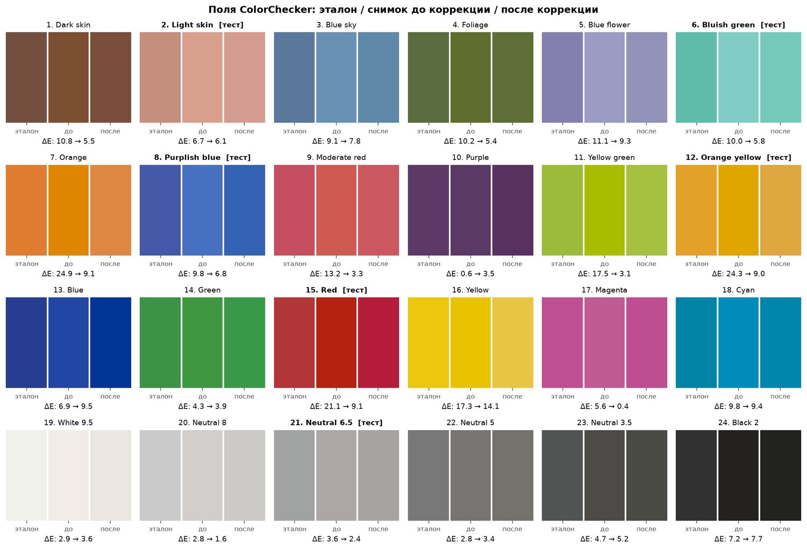
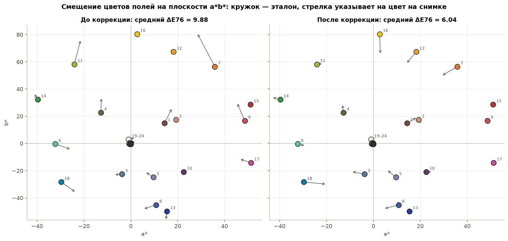
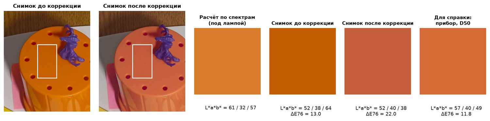

Весь проект на числах из твоего снимка. Разберём, что такое цвет в компьютере, зачем нужна матрица 3×3, как её находит метод наименьших квадратов, как она применяется к фото и как проверяется результат. Почти каждый пример интерактивный: выбирай поле ColorChecker и смотри, что происходит с числами.
Шесть идей, без которых проект не объяснить. Каждая — на твоих данных.
Каждый пиксель хранит три числа: сколько в нём красного (R), зелёного (G) и синего (B). В JPEG это целые от 0 до 255. Для расчётов их делят на 255 и получают дроби от 0 до 1.
Тройку чисел в математике называют вектором и записывают столбиком: c = (R, G, B). Удобная картинка — точка в кубе: по одной оси R, по другой G, по третьей B. Чёрный — угол (0, 0, 0), белый — противоположный угол (1, 1, 1), серые лежат на диагонали между ними, где R = G = B.
Поэтому «исправить цвет» значит превратить одну тройку чисел в другую. Вопрос только в том, каким правилом.
Глаз хорошо различает оттенки в тенях и хуже — в светах. Чтобы не тратить 256 уровней впустую, JPEG хранит числа после гамма-кривой: тёмным тонам отдано больше уровней. Поэтому число 128 из 255 — это не половина света, а примерно 22 %.
Матрица складывает и умножает цвета. Это правильно только для чисел, пропорциональных количеству света: свет от двух ламп складывается, в тени света во столько-то раз меньше. Поэтому первым делом числа JPEG линеаризуют, то есть снимают гамму:
После коррекции делают обратное: enc = 1.055 · lin1/2.4 − 0.055, затем ×255.
Пример из твоего снимка: пиксель оранжевого поля №7 записан как (210, 139, 31). После линеаризации это (0.6445, 0.2582, 0.0137): красного 64 % от максимума, а синего всего 1.4 %.
Матрица 3×3 — таблица из 9 чисел. Удобно думать о ней как о трёх рецептах: каждая строка говорит, как приготовить один новый канал из трёх старых.
Это и есть умножение матрицы на вектор, коротко c′ = P · c. Правило одно: строку матрицы поэлементно умножаем на столбец вектора и складываем три произведения. Три строки дают три новых числа.
Единицы на диагонали, нули вокруг: каждый канал берётся сам из себя, цвет не меняется. Это «ничего не делать».
Каждый канал умножен на своё число: R×1.2, B×0.8. Каналы не смешиваются. Это и есть «вектор 3×1 множителей», он же баланс белого.
R′ = 1.2·0.5 − 0.2·0.2 + 0·0.1 = 0.56. B′ = 0.1·0.5 + 0·0.2 + 0.9·0.1 = 0.14. Новый синий зависит и от старого красного. Такое умеет только полная матрица.
Идея «вектора 3×1, который показывает, насколько каждый цвет отличается от образца», понимается двумя способами. Разберём оба.
Разницу для каждого из 24 полей мы и так считаем — это ΔE (идея 6). Но это диагностика: она говорит, насколько ошибся цвет, и ничего не говорит о цветах, которых нет на мишени. На фото 16 миллионов пикселей, и почти ни один не совпадает ни с одним из 24 полей. Оранжевый барабан — не поле №7. Какую из 24 разниц к нему прибавлять? Нужно одно правило для любого цвета, а мишень служит только для того, чтобы это правило подобрать.
Его можно либо прибавлять ко всем пикселям (c + d), либо умножать каждый канал на своё число (g₁·R, g₂·G, g₃·B; это диагональная матрица из разминки №2). Ниже все варианты посчитаны на твоих 18 полях тем же методом наименьших квадратов, а проверены на всех 24 и на 6 проверочных.
Здесь ΔE посчитан по средним цветам полей без обрезки значений. Поэтому у матрицы 5.85, а в ноутбуке 6.04: там ΔE мерится по готовому фото, где значения обрезаны до [0, 1].
Зелёный стал отрицательным — такого света не бывает. ΔE чёрного выросла с 7.2 до 20.7. Причина физическая: в тени света меньше во сколько-то раз, а не на сколько-то единиц. Правильная коррекция должна умножать, а не прибавлять.
Камера сделала оранжевый слишком «жёлтым»: синего почти нет. Множитель синего 0.925 синий только уменьшает. Добавить синего пропорционально красному умеет лишь матрица 3×3, за счёт элемента p₃₁ = +0.0782:
Синий вырос, даже с перелётом, но ΔE поля упала с 24.9 до 9.1.
Цветные фильтры на пикселях сенсора пропускают не строго «свой» цвет: «красный» пиксель немного реагирует на зелёный свет, «зелёный» — на красный и синий. Даже чувствительности глаза сильно перекрываются; ниже стандартные кривые CIE, они пригодятся в спектральной части. У камеры свои кривые, перекрытые иначе, чем у глаза. Чтобы «распутать» каналы, новый красный должен, например, вычесть немного зелёного. Это делают элементы матрицы вне диагонали, а у вектора 3×1 их нет.
3 входных канала × 3 выходных = 9 коэффициентов. Это самое общее линейное правило для цвета, а 3×1 — его частный случай с нулями вне диагонали, поэтому 3×3 по определению не хуже. Линейность важна: если объект в тени получает вдвое меньше света, то P·(0.5·c) = 0.5·(P·c), и одна матрица правильно работает для любой освещённости.
Физика: сигнал сенсора — это сумма «свет × чувствительность» по всем длинам волн, то есть линейная операция. Если бы кривые камеры были смесью кривых глаза (это называют условием Лютера — Айвса), матрица 3×3 переводила бы цвета камеры в цвета глаза точно. На практике это выполняется приблизительно, поэтому ошибка не ноль. Бывают модели сложнее, например полиномиальные 3×10, но ТЗ требует 3×3, а 9 чисел надёжно находятся по 18 полям.
Для каждого из 18 обучающих полей известно, что записала камера, и каким цвет должен быть. Ищем матрицу P, для которой P·c как можно ближе к эталону сразу для всех 18 полей. Попасть точно нельзя: неизвестных 9, а условий 18 × 3 = 54. Значит, нужен компромисс. Метод наименьших квадратов выбирает его так, чтобы сумма квадратов всех ошибок была минимальной. Квадрат нужен, чтобы ошибки «+0.1» и «−0.1» не гасили друг друга, а большие промахи штрафовались сильнее.
Пусть нужен только один множитель для красного: R_эталон ≈ p · R_камеры. Каждая точка ниже — одно из 18 полей: по горизонтали красный в камере, по вертикали красный в эталоне. Прямая — правило y = p·x, вертикальные отрезки — ошибки. Двигай p и следи за суммой квадратов.
Кривая — сумма квадратов ошибок для каждого p. У неё одна точка минимума, и её можно найти формулой, без перебора:
Теперь новый красный строим из всех трёх каналов камеры: R′ = p₁₁·R + p₁₂·G + p₁₃·B. Это та же задача, только подбираем три числа сразу. В таблице видно, что даёт найденная строка (1.2240, −0.2461, −0.0518) на каждом из 18 полей, и сравнение с «ничего не менять» (1, 0, 0).
Сложим данные в две таблицы. X — цвета камеры, 3 строки (R, G, B) × 18 столбцов (поля). Y — эталон, тоже 3 × 18. Хотим P·X ≈ Y.
Если бы X была квадратной, можно было бы «поделить»: P = Y·X⁻¹. Но X — 3×18, обычной обратной у неё нет. Поэтому обе части умножают справа на Xᵀ (транспонированная X: строки и столбцы поменяли местами, получилось 18×3):
Выражение X⁺ = Xᵀ·(X·Xᵀ)⁻¹ называют псевдообратной матрицей Мура — Пенроуза. Это обобщение обратной матрицы на неквадратный случай. Именно такое P даёт минимум суммы квадратов ошибок: это то же условие «производная равна нулю», что и в шаге 1.
Сравни с шагом 1: там p = Σxy / Σx². Здесь X·Xᵀ играет роль Σx², Y·Xᵀ — роль Σxy, а деление заменено умножением на обратную матрицу.
Обратная матрица: для чисел «поделить на a» значит «умножить на 1/a», потому что a·(1/a) = 1. Для матриц роль единицы играет единичная матрица I из разминки, а обратная A⁻¹ — это такая матрица, что A·A⁻¹ = I.
В RGB одинаковая разница чисел видна по-разному: в тенях сильнее, в светах слабее. Поэтому для оценки цвета переходят в пространство CIELAB:
Lab построено так, что расстояние между точками примерно равно заметности разницы для глаза. ΔE76 — обычное расстояние по теореме Пифагора в трёх измерениях:
Как читать ΔE (распространённая шкала, Mokrzycki и Tatol, 2011):
Почему везде D50. Эталон ColorChecker задан для стандартного дневного света D50 (около 5000 K), а sRGB и P3 рассчитаны на белый D65 (около 6500 K). Чтобы сравнивать честно, цвета переносят к белому D50 хроматической адаптацией Брэдфорда. Это тоже матрица 3×3, которая имитирует, как глаз подстраивается под цвет освещения: белый лист кажется белым и при лампе, и днём.
Те же идеи, собранные в программу: что делает каждый блок ноутбука и какие числа получаются.
| Дата и время | 03.10.2026 15:27:04 |
| Камера | vivo V27e |
| Диафрагма, выдержка, ISO | f/1.79, 1/50 с, 555 |
| Фокусное | 4.84 мм (≈25 мм экв.) |
| Баланс белого | автоматический |
| Размер | 3456 × 4608 |
| Цветовой профиль | Display P3 |
Первые 6 колонок CSV прибор посчитал сам: X, Y, Z, L*, a*, b* при D50. Мы пересчитали XYZ лампы из спектра и получили 64.92 / 57.85 / 18.58 против 64.93 / 57.85 / 18.60 у прибора. Значит, формулы и таблицы верные.
Детектор работает на уменьшенной копии фото, 1200 px по длинной стороне, и проходит 9 шагов из ТЗ:
Ориентация. Мишень на фото повёрнута на 90°. Программа перебирает 8 вариантов нумерации (4 поворота × зеркало) и для каждого считает, насколько хорошо цвета подходят под эталон. Верный вариант даёт невязку 0.314, следующий 2.084, ошибиться невозможно.
Цвет поля — медиана примерно 4500 пикселей в центральном квадрате (около половины поля). Края, тень от рамки и метки «+» в выборку не попадают. Медиана, а не среднее: случайные выбросы (шум, пылинка) на медиану почти не влияют.


Это все данные, на которых строится матрица. Голубым выделены 6 проверочных полей. «Камера, 8 бит» — числа, как они лежат в JPEG (в P3). «Камера, линейные» — после снятия гаммы, это и есть столбцы матрицы X. «Эталон» — линейный sRGB, это столбцы Y.
Что видно по таблице: серые поля в камере чуть «красные» (R > G > B), у оранжевых и жёлтых синий канал занижен, тёмные поля темнее эталона. У Cyan эталонный R отрицательный: этот цвет чуть выходит за охват sRGB.
Для всего фото делается то же самое, только сразу для 15 925 248 пикселей (3456 × 4608). Изображение раскладывается в таблицу «15 925 248 строк × 3 столбца» и умножается на Pᵀ одной операцией numpy: img_lin.reshape(-1, 3) @ CCM.T. Транспонирование нужно потому, что здесь пиксели записаны строками, а не столбцами.
У 3.08 % пикселей после умножения получилось число меньше 0 или больше 1. В основном это насыщенные голубые, синие и зелёные объекты (R′ < 0 у 2.61 % пикселей): камера записала их в широком P3, а в sRGB они не помещаются. Такие значения обрезаются до [0, 1].


На проверочных полях ошибка почти такая же, как на обучающих (6.53 против 5.88). Значит, матрица не просто запомнила 18 полей, а работает и на цветах, которых не видела.


У идеально серого a* = b* = 0. Насыщенность C* = √(a*² + b*²) показывает силу паразитного оттенка.
Числа камеры (линейные P3) умножаются на эту матрицу, результат считается линейным sRGB. Попробуй поставить p₁₂ = 0 в нашей матрице и посмотри, что станет с красными.
В каждой плитке слева эталон, справа результат твоей матрицы. ΔE считается по средним цветам полей без обрезки.
Это независимая от мишени проверка. Спектрофотометр измерил две вещи: S(λ) — сколько света лампа даёт на каждой длине волны, и R(λ) — какую долю этого света оранжевый объект отражает. Свет, пришедший от объекта в глаз, равен S(λ)·R(λ). Глаз оценивает его тремя чувствительностями x̄, ȳ, z̄ из идеи 4:
Сумма по λ — это площадь под кривой произведения. Множитель k нормирует результат так, чтобы идеально белый лист (R = 1) имел Y = 100. Наведи курсор или нажми на график: снизу будут все числа на выбранной длине волны.

Частично. Баланс стал нейтральным, пересыщенные жёлтые и оранжевые приближены к эталону, ΔE 9.9 → 6.0. Но ΔE ≈ 6 — всё ещё заметная разница. Насыщенные оранжевые и красные уходят в коралловый и малиновый. Главная причина — нелинейная обработка JPEG в смартфоне, которую матрица 3×3 не исправляет.
До коррекции слабый тёплый: a* до +1.7, b* до +3.9. После коррекции розоватость ушла (a* от −0.6 до +1.0), осталась лёгкая желтизна в тёмных серых: b* на 2–3 больше эталона, C* 1.6–3.9, около порога заметности. Тёмные серые ещё и темнее эталона (ΔL* до −7.4) — это тоновая кривая камеры.
Ореолов, полос и цветного шума нет: матрица близка к диагональной, внедиагональные элементы по модулю ≤ 0.25, поэтому шум почти не усиливается. Но 3.1 % пикселей вышли за охват sRGB и обрезаны (было 0.7 %), в основном насыщенные голубые, синие и зелёные. Там теряются насыщенность и тонкие переходы.
До коррекции ΔE = 13.0, после — 22.0 к цвету «под лампой». К цвету под D50 — 16.0 → 11.5. Коррекция переводит сцену к дневному свету, поэтому от «комнатного» цвета удаляется (подробно в шаге 7).
Нажми на вопрос, чтобы открыть ответ. Сначала попробуй ответить сам.
Все числа на странице взяты из ноутбука lab4_color_correction.ipynb (снимок от 03.10.2026).